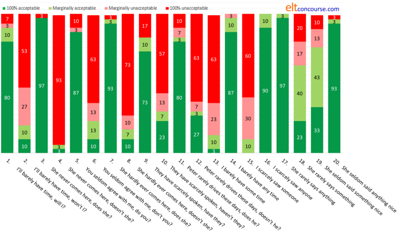
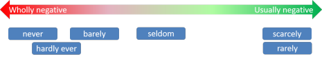

Negation in English
 |
There is a simpler guide to question and negative forms in the initial plus training section.
Negation is not a simple area so this guide is quite long.
If you are here for the first time, the advice is to work through it
sequentially but if you are returning to check something, here's a list
of the contents to take you to its various sections.
Clicking on -top- at the end of each section will
bring you back to this menu.
 |
Examples of negation in English |
English is no different from many languages in having a number of ways to make negatives. How English does it is, however, not simple. Here are some examples of negatives:
- John didn't eat any cake.
- Didn't John eat any chocolate?
- I reject the idea that John at any cake.
- John denied eating any chocolate.
- John hardly ate any cake.
- John can't have eaten any chocolate.
- Which cake didn't John eat?
- John wouldn't mind some chocolate.
- John never eats any cake.
- John may not eat any chocolate.
One of the examples is not negative. Click here when you have spotted it.
Right.
Sentence 8 is the odd one. Although grammatically it looks
negative, it is functionally a positive statement (or even a
request). Note that it is the only sentence in which the
determiner is some rather than any. The
distinction between the two determiners is a good test of whether an
utterance is, in fact, negative or not in its function.
Compare, for example:
Don't you want some chocolate?
vs.
Don't you want any
chocolate?
The sentence with some can be construed as an offer,
not a question or a negative, but the sentence with any is
a real, negative question probably showing some surprise.
The some- series of determiners and pronouns are referred
to as assertive forms in contrast to the any- series which
are non-assertive. For more, see
the guide to assertion and
non-assertion (new tab).
 |
What is being negated?
|
| a) The police didn't close the road | |
| b) The police didn't close the road completely | |
It is not the verb which is being negated – it is the verb
phrase plus its object and any adverbials. We are discussing what is known as
the scope of the negation.
Sentence a) states that the police left the road open.
Sentence b) states that the police closed part of the road.
The verb is
being negated in sentence a), the verb phrase including its object
and the adverbial in sentence b).
The tendency in English to apply negation to phrases rather than
words can lead to a considerable amount of ambiguity. What,
for example, do you understand by the following negative statements?
- He didn't speak to the girl in the red dress at the party.
- She didn't meet the man who bought the house on Thursday.
Click here when you have a response.
Both sentences are ambiguous and mean either:
- He didn't speak to the girl in the red dress
or
He spoke to the girl in the red dress but not at the party - She didn't meet the man who bought the house
or
She met the man who bought the house but not on Thursday
(In this case, too, incidentally, we do not know whether the Thursday applies to when she didn't meet the man or whether the man bought the house on Thursday.)
We can disambiguate these to some extent when speaking by stressing the element we want to negate:
- He didn't speak to the girl in the red dress at the party.
- She didn't meet the man who bought the house on Thursday.
In written language, we have to alter the ordering of the elements to make meaning clearer. For example:
- At the party, he didn't speak to the girl in the red dress.
- On Thursday, she didn't meet the man who bought the house.
Even then, some ambiguity might remain so to be 100% clear, we need to rephrase entirely with something like:
- He didn't speak to the girl in the red dress until after the party.
- She didn't meet the man who bought the house until the following Friday.
A general, if sloppy, rule:
If the negation is ambiguous, hearers will usually assume that
it is the final part of the sentence that is being negated.
So for example:
He didn't drive
means he travelled in a different way
He didn't drive my car
implies he drove his own or someone else's car
and
He didn't drive my car carefully
will normally be understood to mean:
He drove my car carelessly
rather than
He didn't drive my car
In other words, if
there is a danger of some ambiguity, the scope of negation is confined to the final
element of a negative utterance.
The fact that negation applies to the verb phrase overrules the
assumption that it is the final element that is being negated.
For example, in:
He didn't always come by car
it is the verb phrase (and the adverbial), (always) come, that is being
negated, not the prepositional phrase, by car, so it is
understood to mean:
He sometimes came by car
not
He never came by car
See also below under ambiguous negation.
Assertive and non-assertive forms and limitations to the scope of negation |
The scope of negation can be signalled by the use (or not) of
assertive rather than non-assertive forms.
There is a separate guide to assertion and non-assertion on the
site, linked in the list of related guides at the end, because
more than negation is affected. Briefly, however, assertive forms are most commonly used in positive sentences and
non-assertive forms in negatives and interrogatives. So,
for example:
I don't have any money
We haven't started yet
Would you like anything else?
I don't needs anyone's help
all contain non-assertive forms: any, yet, anything and
anyone.
On the other hand:
I have some news
I have already finished
I want something stronger
There is someone at the door
all contain assertive forms: some, already, something
and someone.
There is, however, a rule functioning here to determine where in
the clause the negation stops (i.e., how it is limited).
For
example, in:
I didn't hear any of the music
we have the non-assertive form and so the whole of the clause is
negated and means that no music was heard.
However, in:
I didn't hear some of the music
the negation stops at the verb and the sentence implies that I did,
in fact, hear some of the music but not all of it.
The rule is that when a non-assertive form is used, it must lie
outside the scope of negation.
As a final example, compare:
I didn't talk to any of the children
with
I didn't talk to some of the children.
In the first case, no children were spoken to by me and in the
second case some children only were not spoken to by me.
The simple rule is that the assertive form stops the negation in its tracks.
Here's a diagrammatic way of understanding the scope of negation:
| I saw someone doing something illegal | There is no negation | The speaker denies nothing. | ||
| I didn't see | someone doing something illegal | Negation applies to seeing only | The speaker accepts that someone did something illegal but denies seeing who or what. | |
| I didn't see | anyone | doing something illegal | Negation applies to seeing and anyone | The speaker accepts that something illegal was done but denies seeing who did it. |
| I didn't see anyone doing anything illegal | Negation applies to the whole clause | The speaker denies that anything illegal was done by anybody. | ||
Negating adverbials |
|
|
it doesn't often rain here it often doesn't rain here |
Negation begins with the negator and continues to the end of the
clause so what comes before the negator is left in peace.
For example:
She doesn't still have your book = She had your book once but
no longer
but
She still doesn't have your book = You have not yet given it
to her
and
He didn't frequently go = He went sometimes
He didn't go frequently = He went seldom
but
He frequently didn't go = He often failed to go
Where the adverbial is positioned in a negative sentence is, therefore,
critical to how it is understood.
The same consideration applies when the adverbial is modifying other
elements. For example:
Not only Mary will be late = Other people will also be late
but
Mary will not only be late = She will also do something else
(such as complain about something)
Other adverbials, such as prepositional phrases which come at the
end of clauses may fall within the scope of negation or outside it
as we saw above so, in spoken language, the preposition may be
stressed to signal the adverbial is part of the negation but lack of
stress and a falling intonation contour signals that the adverbial
lies outside the negation. For example, compare:
I didn't speak to her
AT the party
which signals that I spoke to her at some other time (probably
before or after the party)
with
I didn't speak to her at the party
which does not imply that I spoke to her at any other time, either (but I
may have).
For adverbs which are themselves negative (rarely, barely, seldom etc.), see below.
 |
The focus of negation |
The focus of negation is closely related to its scope but is not
signalled in written English (except through
underlining, bold
or italic type face etc.).
So, to signal where we feel the focus lies in spoken English, we
emphasise the element in question, a phenomenon known as special or
contrastive sentence stress. Compare, for example:
- JOHN
didn't buy the book
- but we know that someone bought the book
- John didn't buy the
BOOK
- but we know that John bought something
- John didn't
BUY the book
- but we know that John now has the book
In all these cases, the emphasis falls on the negated item only and the rest of the clause is not negated at all.
In written English, the same effect may be obtained by rephrasing the clause to make it clear what we mean and that often involves the use of cleft or pseudo-cleft sentences such as:
- It wasn't John who bought the book
- but we know that someone bought the book
- It wasn't the book that John bought
- but we know that John bought something
However, no true cleft sentence can stress the verb because:
*It wasn't buy that John did to the book
is not available, so we substitute something unambiguous like:
John didn't buy the book, he stole it.
or a pseudo-cleft, and slightly ambiguous, sentence such as
What John didn't do was buy the book
There is a separate guide to cleft and pseudo-cleft sentences linked from the list of related guides at the end.
 |
Negating imperatives |
English negates imperatives in two distinct ways (and other languages tend to settle on one or the other):
- With No followed by a noun phrase (often a gerund):

- With Do + not + the verb phrase:

There is a rather rare imperative form in English which retains
the pronoun so, instead of
Go away!
we can have the very insistent and rude:
You go away!
Because this form is so insistent, it cannot be used with a
softener so while we can say
Please go away
we cannot have
*Please you go away
This form of the imperative can be negated and, when it is,
carries a sense of threat:
Don't you talk to me like that!
Don't you stay out too late now!
 |
Negating exclamations |
Normally, exclamations are not negatable. For example, we
can have:
How beautiful it is!
but not
*How beautiful it isn't!
Some languages may allow this form. (Graham Taylor, an
erstwhile England football manager, was once nationally lampooned in
Britain for exclaiming Do I not like that!)
There is a form of negative exclamation, however, which is seen
in, for example:
Isn't that beautiful!
which is not a real question at all but a simple exclamation.
We can also use a negator to perform a similar function as in,
e.g.:
Never have I seen such a beautiful sight!
Scarcely have I been so surprised!
Note, by the way, the conventional inversion of subject and
verb in these. In fact, what English does is make a question
form rather than simply inverting the word order as in, e.g.:
Never did I see such idiocy!
See below for more on this.
 |
Multiple negation |
English does not normally permit double or multiple negation in formal
language so we do not allow, e.g.:
*I don't want nothing
*They didn't meet nobody
*She wasn't never listening
*Nobody doesn't want it
*I don't want nothing from nobody no time
all of which are commonplace in a number of languages (including,
for example, Portuguese, Russian, Spanish, Greek and Italian).
In those and other languages, the double negation often serves to
emphasise the sense of the negation. Double negation may also
simply be the grammatical form of negation as it is in modern Greek,
for example, where a sentence such as:
I don't want anything
is often translatable as:
I don't want nothing
Double negation can also have the effect of cancelling out the
negation and making the statement positive.
These sorts of double negation are also common in a variety of
dialects of English but are generally seen as non-standard or even
sub-standard.
 |
When double negation is allowed |
| weasel words etc. |
English allows a double negative in certain circumstances.
- weasel words: adjectives
- Using weasel
words means deliberately withholding a
view or being intentionally ambiguous. For example:
She is not uncomfortable with the idea
He is not fully inept
both of which can imply a toned-down meaning akin to:
She is somewhat comfortable with the idea
He is adequately skilful
or they can mean:
She is wholly comfortable with the idea
He is remarkably skilful
The term for this kind of deliberate understatement is litotes, incidentally. - weasel words: verbs
- Other examples of weasel words include the use of a negative
plus a negative verb, for example:
I do not deny that I took it
might mean:
I admit taking it
I may have taken it by accident
I may have taken it and forgotten about it
and so on.
I do not disagree
may also mean:
I agree
I partially agree
I fully agree
I have no view one way or the other
etc. and the hearer needs more data to be certain what is meant.
The structures can be disambiguated with the insertion of a modifying adverbial as in, e.g.:
I do not admit taking it under any circumstances
which means
I strongly deny taking it
or
I do not fully disagree
which means:
I partially disagree - negation in both main and subordinate clauses
- This kind of negation is not particularly common but occurs,
for example in:
I don't know whether he isn't right
which means:
I think he may be right
or
I didn't go because he wasn't going
which means either:
His decision influenced mine (so I didn't go)
or, by stressing because:
The reason I didn't go was not because he wasn't going (but for another reason) - double negation with modal auxiliary verbs
- With some modal auxiliary verbs, especially those referring to ability
or obligation, double negation has a useful communicative role.
For example:
I couldn't not go
implies either:
I was forced to go
or
I felt obliged to go
and
I can't not hear him
which means:
I can't avoid hearing him
Other examples are:
I mustn't not ask her
meaning:
I am obliged to ask her
I don't have to not be late
meaning:
I am allowed to be late
Don't think you don't have to be there
meaning:
You have to be there
and so on.
In these cases, the negator (not, don't etc.) is usually stressed in spoken English and the forms are avoided in writing. - double negation with determiners and pronouns
- Some determiners and pronouns in English are negative in
meaning and they include none, no, nothing, nobody etc.
These sometimes appear in double negative clauses such as:
I didn't expect none to arrive
meaning:
I expected some people to arrive
He doesn't have no money
meaning:
He has a little money
I didn't pay nothing
meaning:
I paid a little
She didn't talk to nobody
meaning:
She talked to a few people
In all these cases, in spoken language, the pronoun or determiner is usually emphasised to convey its special markedness. In writing, where that is not an option, such expressions are usually avoided. - double negation with negative adverbs
- Similarly, some adverbs in English are negative in their
sense and they include never, rarely, seldom, hardly ever
etc. These sometimes appear in double negatives such
as:
I don't never go
meaning:
I go infrequently
They don't rarely make a noise
meaning:
They usually make a noise
etc.
Again, in speech the adverb is usually emphasised to signal markedness and in writing the forms are avoided.
 |
Alternative negation |
There are two aspects of alternative negation (i.e., two ways to denote a negative of the same utterance).
Type one
With some structures, English also has two possible negative forms which do not affect the scope or focus of negation:
| Something's not right | Something isn't right |
| She's not happy | She isn't happy |
| They'll not be coming | They won't be coming |
| She'd not been listening | She hadn't been listening |
| Mary'd not go | Mary wouldn't go |
| He's not got the money | He hasn't got the money |
Notes:
- The structures in the left-hand column are often seen as more colloquial than those in the right-hand column. In many dialects of English, however, they are the preferred forms.
- Some abbreviated structures cannot exist in the first-person singular
as an alternative to, e.g.:
I'm not ready
We do not allow
*I amn't ready
or even
*I aren't ready
The negative of am in interrogatives and questions tags causes problems all round because the form is usually:
Am I not coming, too?
or
I am coming too, aren't I?
the first of which often seems too formal because no abbreviated (enclitic) form of not is available:
*Amn't I coming, too?
or we can have
Aren't I coming, too?
which often seems too informal because we can only use the enclitic form and:
*Are I not coming, too?
*I am coming, too, are not I?
are not available to us. - If the more colloquial form of have is selected, the use of got is
obligatory.
We can have
They've not got the right answer
but not:
*They've not the right answer
although:
He hasn't the money
and
He hasn't got the money
are both acceptable.
Type two
The second form of alternative negation involves negating a
different element of the clause, instead of the verb.
There are two types:
- Sometimes, the sense (i.e., scope and focus) is not altered but the style is.
For example:
and so on.I didn't have any lunch or, more formally I had no lunch An old saw will not cut properly No old saw will cut properly Computers aren't cheap No computer is cheap She didn't talk to anyone She talked to no-one - At other times, especially with certain determiners, the
scope of negation is altered in the alternative form. For
example:
and so on.Many people did not congratulate her is not the same as Not many people congratulated her All the children didn't arrive on time Not all the children arrived on time Half of the food has not been eaten Not half of the food has been eaten A few of us didn't notice the difference Not a few of us noticed the difference
In the first column, the negation applies to the whole of the clause but in the third column, the scope of negation is limited to the determiners. So,
All the students didn't sit the examination
means none sat the examination, but:
Not all the students sat the examination
means some did and some didn't.
 |
Ambiguous negation |
Occasionally, especially in writing where the use of emphasis, tone units and special sentence stress is less available, some negative statements can be ambiguous and must be rephrased to make the scope of negation clear. For example:
| She didn't praise any of the children | could mean | She praised no children at all | or | She praised only carefully selected children |
| They didn't drink half the beer | Half the beer remains | More than half the beer remains | ||
| This doesn't affect a few of you | A few of you are unaffected | All of you are affected | ||
| I didn't come because she would be here | The reason I didn't come was that she would be here | My reason for coming was not that she would be here | ||
| He wasn't promoted due to his working style | There was another reason he was promoted | His working style was the reason he wasn't promoted | ||
| I can't understand all of what he says | I understand nothing he says | I understand some of what he says |
In spoken language, the senses can be disambiguated by stressing
the determiners any and a few, stressing the
pre-determiners half (of) and all (of), stressing the
subordinating conjunction because or the preposition
due to and by placing a rising intonation
contour on she would be here and his working style.
In written English, that form of disambiguation is not available so
careful writers will rephrase to avoid the possible confusion.
See also the ways the use of assertive and non-assertive forms can
serve to disambiguate in the guide to assertion and non-assertion
linked in the list of related guides at the end.
 |
Adverbs, pronouns and determiners |
These three word classes have two forms of negation and they work like this:
| Positive (Assertive forms) | Negative form 1 (Non-assertive forms) | Negative form 2 (Non-assertive forms) | |
| Adverbs | It is †somewhat warmer | It isn't any warmer | It is no warmer |
| He is still waiting | He isn't waiting anymore / longer (r) | He is waiting no more / longer | |
| They are there already | They aren't there yet | ‡ NO FORM | |
| She *sometimes arrives on time | She doesn't ever arrive on time | She never arrives on time | |
| It is somewhere in the garage | It isn't anywhere in the garage | It's nowhere in the garage (r) | |
| I'll be able to get in touch somehow | I won't be able to get in touch in any way | I'll be able to get in touch in no way | |
| Pronouns | I'll complain to someone / somebody | I won't complain to anyone / anybody | I'll complain to no-one / nobody |
| I will buy something to eat | I won't buy anything to eat | I will buy nothing to eat | |
| She wants one or the other | She doesn't want either | She wants neither | |
| I bought some | I didn't buy any | I bought none | |
| Determiners | They lost one or the other book | They didn't lose either book | They lost neither book |
| She wants some tea | She doesn't want any tea | She wants no tea |
† and other downtoners such as slightly, marginally, a bit, a tad etc.
‡ The fact that there is no negative word for yet causes problems for learners from some language backgrounds.
(r) These are rarer and slightly more formal items.
It is worth noting that when referring to time, the non-assertive word is anymore but when reference is to quantity, the term is two words: any more.
A few notes on the above:
- The table isn't complete because there are some less
frequent negations, e.g.:
She's happy, too → She's not happy either [but not *She's happy neither]
They are, to some extent, contented → They aren't at all contented [but not *They are none contented] - Apart from the use of never, the structures in the right-hand column are more formal than those in the middle column.
- The pronouns in column 3 are singular although native
speakers often pluralise the verb to form, for example, the
questionable
I asked them all but none are coming.
Issues of proximity concord are in play here. For more, see the guide to concord linked from the list of related guides at the end. - In the initial position, as the subject of the verb, only the forms in
the third column are possible:
Nobody was late [not *Anybody wasn't late]
Neither was ready [not *Either wasn't ready]
etc.
Many other languages do allow these forms of negation. - We can also, somewhat formally, front the adjunct as we saw
above but not without forming a question word order in the
sentence:
Never would I have believed ...
Not until then did I realise ... - Once negated, the whole utterance and all following adverbs,
pronouns and determiners are usually negated in the same way so we get,
e.g.:
Neither of the children was looking very happy and none of the adults was smiling either
not
*Neither of the children was looking happy and any of the adults weren't smiling either
and
I haven't been anywhere yet
not
*I haven't been anywhere already - If the usual rule of using the non-assertive any-
series in negations is not observed, there is a change to
the scope of negation. This is because non-assertive terms
are used within the negated clause and assertive terms outside
it.
Note the difference between:- She didn't eat any of the cake
- She didn't eat some of the cake
In sentence A, the whole sentence is negated
(hence the use of any) and the meaning is
She ate no cake
In sentence B, however, only the verb is negated because the object
noun phrase includes the assertive some and the meaning is
There was some of the cake left which she did not eat
Just possibly, in spoken English, with the emphasis heavily on
some, the sentence could mean
She ate all the cake (not just some of it)
 |
Negators |
These five adverbs are sometimes known as negators because they
operate similarly to the true negator never.
Most analyses include the following points but this site has done
its own research, the outcomes of which throw a little doubt on the
consistency of these characteristics (see below for more on that).
For example:
- They are used with non-assertive forms (1 in the table above)
- I seldom went anywhere
- She barely saw anything
- They hardly had any time to think
- She scarcely ever comes late
- They rarely come to anyone's party
- In the initial position, somewhat formally, they require
inversion of the subject and verb (with the do operator in past
simple and present simple forms):
- Seldom have I heard such nonsense
- Rarely does he believe me
- Hardly had I arrived when the phone range
- Barely audibly did she speak
- Scarcely credible was their explanation
- Like the negator never these adverbs can, not must,
take a positive question tag:
- They never like anything, do they?
- They scarcely said anything, did they?
- You seldom agree, do you?
- I hardly had time, did I?
- You seldom agree, don't you?
- I hardly had time, didn't I?
- It was barely audible, wasn't it?
- I never had much time, did I?
and we do not allow: - *I never had much time, didn't I?
All five of these take non-assertive forms, for example:
They have scarcely anything to say
She has hardly any money left
We barely ever go anywhere these days
They have seldom done anything
We never see anybody
The assertive forms:
*They have scarcely something
*She has hardly some money left
*We barely go somewhere
*They have seldom done something
*We never see somebody
are usually disallowed.
(The scope of negation can, however, be restricted to exclude the
object so both:
She seldom said something nice
and
She seldom said anything nice
are both possible although the first is rarer and excludes the object
from the negation.)
Because these negating adverbs carry the negative sense, they are
not themselves negated because that would produce a double negation
not allowed in English. So:
*I don't seldom go
*She doesn't rarely come
*They don't have hardly any
*He didn't barely understand
etc. are all disallowed (but see above under double negation
for the rare times when they are possible).
All of the above may be allowed in other languages and that is a
source of error.
Research findings about these negators |
The assumptions in many grammatical analyses (e.g., Quirk et al, 1972, Chalker, 1984 and Thornbury, 2017) are that:
- All these negators are used with non-assertive forms
- All take positive rather than negative tag question elements
and it is these two assumption that the research set out to
investigate.
Over 30 native speakers of English were asked to
grade a set of 20 sentences containing the negators with various
forms of tags and assertive or non-assertive pronouns or
determiners. The categories to select from were:
100%
acceptable, Marginally acceptable, Marginally unacceptable, 100%
unacceptable and the 20 items were:
| # | Item | # | Item | # | Item | # | Item |
| 1 | I’ll barely have time, will I? | 6 | You seldom agree with me, don’t you? | 11 | Peter rarely drives these days, does he? | 16 | I scarcely saw anyone |
| 2 | I’ll barely have time, won’t I? | 7 | She hardly ever comes here, does she? | 12 | Peter rarely drives these days, doesn’t he? | 17 | She rarely says anything |
| 3 | She never comes here, does she? | 8 | She hardly ever comes here, doesn’t she? | 13 | I barely have some time | 18 | She rarely says something |
| 4 | She never comes here, doesn’t she? | 9 | They have scarcely spoken, have they? | 14 | I barely have any time | 19 | She seldom said something nice |
| 5 | You seldom agree with me, do you? | 10 | They have scarcely spoken, haven’t they? | 15 | I scarcely saw someone | 20 | She seldom said anything nice |
You may like to classify those sentences
into those four categories in your head before you move on.
Then, or otherwise,
click here for a summary of the outcomes in percentages.

Conclusions
You can, of course, draw your own from the findings here but here's what were felt to be the most important:
- These items are seen as generally
negative because:
People were able to accept as fully or marginally correct a positive tag on- never: (Item 3) 97% (this is an indication, of course, that the adverb is universally seen as negative)
- barely: (Item 1) 90% of the time
- seldom: (Item 5) 87% of the time
- hardly ever: (Item 7) 93% of the time
- scarcely: (Item 9) 83% of the time
- rarely: (Item 11) 3% of the time
- However, the adverbs may also be seen as less negative
because there is some acceptance that a negative tag question is
acceptable as follows:
- never: (Item 4) 93% full rejection but 3% full acceptance and 3% marginal acceptance
- barely: (Item 2) 53% full rejection but 10% full acceptance and 10% marginal acceptance
- seldom: (Item 6) 63% full rejection but 10% full acceptance and 13% marginal acceptance
- hardly ever: (Item 8) 73% full rejection but 10% full acceptance and 7% marginal acceptance
- scarcely: (Item 10) 57% full rejection but 23% full acceptance and 7% marginal acceptance
- rarely: (Item 12) 63% full rejection but 27% full acceptance and 3% marginal acceptance

and the two items on the right of that cline were considered marginally or wholly acceptable with negative tags by a third of the respondents. - With assertive determiners and pronouns we found that the
scope of negation can be limited with two of the items but that
is not universally recognised because:
Item 18: She rarely says something
was fully accepted by 20% and considered marginally acceptable by 40% with only 20% finding it wholly unacceptable (as we would not expect at all)
Item 19: She seldom said something nice
was fully accepted by 33% and considered marginally acceptable by 43% with only 10% finding it wholly unacceptable (as we would not expect at all)
This result partially parallels the cline we saw above because rarely lies on the right and seldom in the middle.
The word scarcely is something of an oddity because while it shares the same level of acceptability with rarely concerning tag questions, Item 15 (I scarcely saw someone) was rejected by 90% of respondents.
For the other negators, the assumption was that the whole of the following text was negated and, therefore, the items were understood as distinctly negative.
We may take it that the words seldom and rarely are perceived as slightly less negative than the other four adverbials. - These adverbs may well be negative but they are not as negative as the true negator, never.
- Both scarcely and hardly are also followed routinely by ever which would appear to enhance the negativity with which it is seen. Deliberately, for this little survey, only hardly was paired with ever and that comes out as almost as negative as never but scarcely alone as we see from the cline is viewed considerably more positively.
- It seems that with assertive or non-assertive pronouns and
determiners, that the situation is mixed because the scope of
negation can be called into play to make what would appear to be
malformed sentences acceptable so, arguably, we can accept,
e.g.:
I hardly ever meet someone I know at his parties
She rarely says something stupid
We seldom listen to some kinds of music
They have scarcely spoken to some of the guests
We barely know some of the people here
which all reduce the scope of negation to the verb phrase but leave the object positive (or assertive).
The implications for teaching are not huge because the data show that treating the items as negative will rarely if ever result
in a malformed or unacceptable utterance but, on the other hand,
that treating them as potentially positive is also acceptable,
especially in the cases of inserting tag questions.
The scope of negation issue remains and it is non-intuitive for many
learners who may well not be aware of the difference between:
She seldom talked to some of the children
and
She seldom talked to any of the children
and at more advanced levels, this needs to be highlighted so that
learners can notice what is happening..
 |
little, few and only |
| little money anywhere |
We need to distinguish here between a little and
little and between a few and few because,
with the article, these determiners mean an adequate amount and
operate perfectly normally, taking assertive forms so we get, e.g.:
A few people had something
to say
A little money has already
been made
However, when they are used without the article, these
determiners signal an inadequate
amount and are negative so we allow:
Few people had anything
to say
Little money has ever been
made
but not
*Few people had something to
say
unless we are deliberately leaving the object out of the scope
of negation (see above)
*Little money has already been made
When only means no more or other than
it also functions as a negator so we encounter, e.g.:
Only Mary knew anything
and not, usually:
Only Mary knew something
unless, again, we are deliberately leaving the object out of the scope of
negation (see above).
Like other negators, these three words do not always take
positive question tags so the usual form is, for example:
Only Mary knew anything, didn't she?
Few people had anything to say, didn't they?
Little change is necessary, isn't it?
although positive question tags may be used as in, e.g.:
Only Mary knew anything, did she?
Few people had anything to say, did they?
Little change is necessary, is it?
but that is very much rarer.
The adverb little works in a similar fashion to the
barely, scarcely, rarely etc. group including obligatory
inversion when in initial position:
He little realised that any danger was involved
Little did he realise the danger it involved
almost and nearly |
|
| nearly noon |
These two adverbs are not, in themselves, negative but they imply
a negative outcome in a way that barely, scarcely,
hardly etc. do not. Compare, for example, these pairs of
sentences:
They scarcely survived the accident
but they did
They almost survived the accident
but didn't
She barely arrived in time
so was not late
She nearly arrived in time
but was late
I had hardly got home when I started to feel unwell
but I was home
I had nearly / almost got home when I started
to feel unwell
and I was not home.
Additionally, these adverbs modify negative or non-assertive
pronouns but not their parallel assertive forms so we allow:
I have almost nowhere to put it
They have nearly nothing to say
We had almost nobody to talk to
Almost anybody will tell you
Nearly anything you bring will be welcome
etc.
but we do not allow:
*I have almost somewhere to put it
*The have nearly something to say
*We had almost someone to talk to
*Almost somebody will tell you
*Nearly something you bring will be welcome
This is not an intuitively obvious restriction and it does not apply in many languages so leads to error.
Fronted negative adverbials |
Fronting of adverbs occurs routinely in many,
especially Germanic, languages and is often followed by the
inversion of subject and verb. For example:
Yesterday I went to London
translates in German as:
Gestern ging ich nach London
in Dutch as:
Gisteren ging ik naar Londen
and in Swedish as
Igår gick jag till London
all literally:
Yesterday went I to London.
The peculiarity in English is twofold:
- inversion only occurs with fronted adverbials when they carry a
negative sense (although it can occur with place adverbials in,
e.g.:
Here she comes
There it goes) - inversion in this case (but not with place adjuncts) requires the insertion of the do-operator with simple present and past tense forms
Here's how it works but some of the forms are very formal and unusual and most are more formal than the equivalents in the left-hand column:
| Normal ordering | → | Inverted forms |
| I had barely sat down when the 'phone rang | → | Barely had I sat down when the 'phone rang |
| I scarcely ever went to school by bus | → | Scarcely ever did I go to school by bus |
| I rarely see her these days | → | Rarely do I see her these days |
| I seldom have time for this | → | Seldom do I have time for this |
| She had hardly arrived when he started to complain | → | Hardly had she arrived when he started to complain |
| She had no sooner begun when she was interrupted | → | No sooner had she begun when she was interrupted |
| I have never heard anything so foolish | → | Never have I heard anything so foolish |
| He little understands the trouble he is causing | → | Little does he understand the trouble he is causing |
| I haven't been there since I was ten years old | → | Not since I was ten years old have I been there |
| I didn't hear about it until last night | → | Not until last night did I hear about it |
| She will no longer appear in the role | → | No longer will she appear in the role |
| I will not give them anything | → | Nothing will I give them |
| The work was not only poorly done, it was overpriced | → | Not only was the work poorly done, it was overpriced |
| You can only come in with a ticket | → | Only with a ticket can you come in |
| You can't do this under any circumstances | → | Under no circumstances can you do this |
| I want to go even less now | → | Even less now do I want to go |
| You may smoke in this area alone | → | In this area alone may you smoke |
With the correlative negative conjunctions, a similar phenomenon occurs, but the conjunction is often fronted in the subsequent clause and it is only the second clause in which the inversion occurs:
| Neither my wife nor I can speak French | → | I can't speak French and neither can my wife |
| She and her brother won't live here any longer | → | She won't live here any longer and nor will her brother |
| He refused to do the work or give it to me | → | He refused to do the work. Nor would he give it to me |
In all cases in English, fronting the element draws attention to
and emphasises its meaning. That is to say, this ordering in
English is marked for special attention.
Languages which routinely front adverbials have no such marking and
the fronted adverbial carries no special significance.
Learners who are unaware of this fact and told that fronting the
adverbial is simply an option which carries no special meaning will
be misled and it may be a source of error either in producing
unintentionally marked language or in not interpreting what is heard
or read as being marked.
 |
Negative questions |
Negative question forms have a range of functions, many signalled by intonation. See also the use of negative question forms in exclamations, above.
- To express the negative orientation of the speaker:
- Does nobody love me? [I assume nobody loves me]
- Can't you get here any earlier? [I assume you can't but I'm hoping you can]
- Won't you reconsider? [I assume you won't]
- To express surprise:
- Isn't it too cold to go swimming? [I assumed it was]
- Aren't you too old for this? [I assumed you were]
- Hasn't he left yet? [I assumed he had]
- Compare:
Hasn't he left already? [I assume he has]
- To express disappointment:
- Shouldn't you be in bed? [I am disappointed or surprised that you are not]
- Can't you help a bit? [I am disappointed that you are not helping]
 |
Transferred negation(also known as raised negation) |
English has a peculiarity with negation which causes a good deal
of difficulty.
Most languages will put the negation where it
belongs, i.e., with the verb that is being negated.
For example:
I think that he hasn't done it yet
I expect he won't come
I imagine she has no money
etc.
In all these cases, we have a verb signalling belief followed by a
subordinate clause which is negated in some way.
English, bizarrely, often chooses to negate the main clause and
leave the subordinate clause positive. This is why it is
called transferred or raised negation. It only occurs with verbs
signalling belief or assumption such as:
believe, suppose, fancy,
imagine, reckon, expect etc.
I don't think he's done it yet
I don't expect he will come
I don't imagine she has any money
This is deeply illogical and confusing because the negation
really belongs with the subordinate, not the main, clause. The
proof of this is to consider the natural question tag because the
positive question tag reveals the negative meaning of the clause:
I don't suppose he is coming now, is he?
(not do I? or isn't he?)
I don't reckon we'll be there before 8, will we?
(not do I? or won't we?)
Ambiguity
There is, in fact, a small danger of some ambiguity when negation
is transferred (or understood to be transferred). So, for
example:
John doesn't think his sister is happy
can be interpreted two ways:
John believes his sister is unhappy
or
John does not think his sister is happy, he knows she is.
The second interpretation is rare and will be signalled as such,
either by the insertion of an additional clause as above or by heavy
emphasis being placed on the main verb.
 |
to make matters worse ... |
... not all such verbs allow this transfer.
For example, assume and presume do not work this
way:
I assume you haven't paid [assumption = you haven't
paid]
is not the same as
I don't assume you've paid [no assumption made]
The verb hope is also odd because it will not allow
the transfer:
I don't hope it rains [= I do not hope for rain but I may
expect rain]
is not the equivalent of
I hope it doesn't rain [= I am hoping for no rain]
The verb expect works differently, allowing the transferred
negation and using the future
will:
I expect it won't rain = I don't expect it will rain
This explains, partially, why the verbs have irregular and
stylistically determined formulations using the pro-forms not
and so for the object clause.
All the verbs in the list above can be negated by a formulation such
as:
Is she coming? It doesn't appear so / It appears not
Will it be expensive? I don't expect so / I expect not
Generally speaking, the forms with not are more formal
with the exceptions of hope and guess with which
the not formulation is preferred in all styles.
There are a number of other verbs which refer to belief and
assumption (or statements and questions) which do / do not allow transferred negation.
Here's the list:
| Verb | Transferred negation allowed? | With not as a pro form? | With so as a pro form? | ||
| appear | It doesn't appear that's true |
= | It appears that isn't true | It appears not | It doesn't appear so |
| ask | I didn't ask if it was true | ≠ | I asked if it wasn't true | No: *I asked not | No: *I didn't ask so |
| assume | I don't assume that's true |
≠ | I assume that's not true | I assume not | I don't assume so |
| believe | I don't believe that's true | = | I believe that's not true | I believe not | I don't believe so |
| claim | I don't claim that's true | ≠ | I claim that's not true | No: *I claim not | I don't claim so |
| enquire | I didn't enquire if it was true | ≠ | I enquired if it wasn't true | No: *I enquired not | No: *I didn't enquire so |
| expect | I don't expect that's true | = | I expect that's not true | I expect not | I don't expect so |
| fancy | I don't fancy that's true | = | I fancy that's not true | I fancy not | I don't fancy so |
| guess | I don't guess that's true | ≠ | I guess that's not true | I guess not | ?: ?I don't guess so |
| hope | I don't hope that's true | ≠ | I hope that's not true | I hope not | No: *I don't hope so |
| imagine | I don't imagine that's true | = | I imagine that's not true | I imagine not | I don't imagine so |
| presume | I don't presume that's true | ≠ | I presume that's not true | ?: ? I presume not | I don't presume so |
| reckon | I don't reckon that's true | = | I reckon that's not true | I reckon not | I don't reckon so |
| say | I don't say that's true | ≠ | I say that's not true | No: *I say not | I don't say so |
| seem | It doesn't seem that's true | = | It seems that's not true | It seems not | It doesn't seem so |
| state | I don't state that's true | ≠ | I state that's not true | No: *I state not | No: *I don't state so |
| suppose | I don't suppose that's true | = | I suppose that's not true | I suppose not | I don't suppose so |
| tell | I didn't tell you that's true | ≠ | I told you that's not true | No: *I told you not | I didn't tell you so |
| think | I don't think that's true | = | I think that's not true | I think not | I don't think so |
| understand | I don't understand that's true | ≠ | I understand that's not true | ?: ?I understand not | I don't understand so |
Notes:
- Items are marked with a '?' are doubtfully acceptable.
Some of the forms marked as wrong with the '*' may occur for stylistic or literary effect but that is probably not something most learners (and teachers) need to know. - There is some coincidence of the verbs which do not
allow transferred negation and which also do not allow negation with
the pro-forms not and so.
Unfortunately, there’s another problem in that the negative pro-form in, e.g., ‘I don’t think so’ is itself a transferred negation and some verbs which do not normally allow transfer do allow the so pro-form. - As a rule of thumb (and a rough one at that), it appears that the more 'assertive' verbs, semantically speaking, are the ones that do not allow transferred negation.
- Some speakers of English find that certain verbs, particularly guess, claim, fancy, assume, presume and understand, sound rather stilted and unnatural in the don't/doesn't + verb + so formulation.
- The list and the characteristics of the verbs in it would be very different for languages other than English.
 |
to make matters even worse ... |
English and a range of other European languages, such as Italian,
German and Polish allow transferred negation (sometimes with a
subtle change in emphasis) but many other languages (such as Thai)
do not allow it under any circumstances.
Other languages, such as Russian, will allow both forms but prefer
the negation on the subordinate clause (which is where logic demands
it).
Scandinavian and Germanic languages, according to ELT Concourse's long-suffering
and generous native-speaker informants, allow both forms but, like
English, often prefer the transferred-negation form despite its
illogicality.
Spanish and French are not alone in varying the mood of the verb,
using the subjunctive for the transferred negation and the
indicative for the logical negation.
The subjunctive mood implies the counterfactual sense of, e.g.:
I don't think it's going to rain
but the indicative mood is used to express greater certainty as in:
I think it's not going to rain
In common with these and other languages, English also uses a
subjunctive, or putative, should as in, e.g.:
I don't think this should be difficult
vs.
I think this won't be difficult
(For more on this, see the guide to tense in dependent clauses linked in the list of related guides at the end.)
In Spanish and Catalan, too, the convention is to put the
negation in the subordinate clause, where it belongs, so the
canonical form will be:
I think it wasn't like that
However, if one is contradicting something said, then the negation
will appear on the first verb as in, e.g.:
I don't think it was like that
In English, conventional use of transferred negation often involves the non-assertive forms
so we will have, e.g.:
I don't think we'll have any rain
and
She doesn't believe anyone is working hard
enough
but when the negation is not transferred, the meaning may be more
assertively expressed as in, e.g.:
I think we won't have some rain
or
She believes someone is not working hard enough
The result of inter-language influences and the unpredictable behaviour of the verbs is that learners will often produce either unnatural or plain wrong language by assuming either:
-
all verbs of thinking and believing will function the same
way in English
or - that English will function in the same way as other languages
Errors such as:
*I think that he wouldn't come
*I say not
*He didn't state so
*I didn't ask so
*I think anyone isn't here
occur for one or both of these reasons.
 |
A general rule of thumb |
The situation appears to be that in many languages,
apart from English, which allow transferred negation, the
transferred form is not the preferred one and is marked in some way, to express, for example,
contradiction.
In English, the transferred form, with those verbs which allow it,
is the unmarked formulation and the marked formulation is to negate
the subordinate clause.
Transferred negation is just one way in which items may be marked for some kind of special emphasis. For more, see the guide to markedness linked in the list of related guides at the end.
 |
Negating catenative verbs |
The verb catenate may be defined as join together in a series and there is a range of verbs in English which can be followed by a non-finite form. That form may be the bare infinitive, the to-infinitive, the -ing form or a past participle (-ed / -en form).
We can negate either the main verb or the following non-finite but the meaning often changes. Compare, for example
- She didn't promise to come
which refers to the promising, with
She promised not to come
which refers to not coming - He didn't manage to complain
which means he was unable to complain, with
He managed not to complain
which means he controlled himself and did not complain although he wanted to. - Susan admitted not asking him
which means she accepted the blame, with
Susan didn't admit asking him
which means she denied any blame. - He spent the day not working
which means he did no work that day, with
He didn't spend the day working
which means he only spent some of the day working. - I don't want to make my opinion obvious
which suggests I'll hide my opinion, with the rarer and clumsy
I want to make my opinion not obvious
which refers to allowing people to know your opinion but in an unobvious way.
In all these cases, negating the main verb makes the following non-finite negative as well but only negating the non-finite clause may leave the situation open.
 |
Negating modal auxiliary verbs |
Many modal auxiliary verbs are negated by simple inserting the not /
n't after them, that being one of the characteristics of
central or pure
modal auxiliary verbs and semi-modal auxiliary verbs when acting as
central modal
auxiliary verbs:
You should talk to him → You shouldn't talk to him
He could swim well → He couldn't swim well
etc.
However, depending on function, the negative forms of many modal
auxiliary verbs, both pure and semi-, are unpredictable in form or carry
unpredictable meanings. For example:
- Future and current possibility
- She could arrive early tomorrow → She probably
won't arrive early tomorrow
I should / would think he's arrived by now → I shouldn't / wouldn't think he's arrived yet
Here English works conventionally with transferred negation because
I should / would think he hasn't arrived yet
is marked and emphasises the doubtfulness of his being there.
The verbs may and might used for possibility are more predictable and regular:
She might /may arrive early → She mightn't / may not arrive early
and also allow transferred negation:
You might think he's being serious → You mightn't think he's being serious
but, again, the non-transferred form is marked:
You might think he's not being serious. - Futurity, willingness and intention
- It is often averred that:
I am going to talk to the boss about this
and
I'll talk to the boss about this
are different insofar as the first refers to present intention and the second either to current willingness or to futurity. That is partly the line taken on this site in the guide to talking about the future.
However, when the forms are negated, the distinction is less clear, if it exists at all so, for example:
I won't talk to the boss about this
and
I'm not going to talk to the boss about this
are, for most intents and purposes entirely synonymous.
The other factor here is that the negated forms can carry the sense of refusal rather than intention, willingness or futurity.
They do not in, for example:
I'm not going to have time to do that
and
I won't have time to do that
which are synonymous and refer to futurity alone and not to willingness or intention. - Complaint
- He could / might have told me!
has no negation at all because
He couldn't have told me
means
I am sure he didn't tell me
and
He mightn't have told me
means
I am not at all sure whether he told me or not - Suggestion and advice
- You might try being nice to him → You might try not
being nice to him [not *You mightn't try ...]
Compare also:
You shouldn't try to make him angry
meaning
You will probably try to make him angry and it's inadvisable
and
You should try not to make him angry
which is advice about being diplomatic. - Deduction
- That must be the postman → That can't / couldn't be the
postman
She must have been exhausted → She can't / couldn't have been exhausted - Obligation
- She had to phone her mother → She didn't need to phone
her mother [so probably didn't]
She had to phone her mother → She needn't have phoned her mother [but did]
She had to phone her mother → She didn't have to phone her mother [and may or may not have done]
What is being negated?
As we saw above with catenative verbs, either the first or the
second, non-finite, form may be negated but in the case of modal
auxiliary verbs there is sometimes ambiguity. If for example,
we take:
He may not come
we can interpret the meaning either as
He is not allowed to come
or
It is possible he will not come
In written English apart from clues from the co-text and context,
it is impossible to disambiguate the senses.
In spoken English disambiguation can be achieved by tone unit
separation.
The difference will then be the phrasing and stress. As:
He may | not come
which implies that it is a possibility,
vs.
He may not | come
which implies that it is forbidden.
Compare also:
I can
| not smoke
which means
I am able not to smoke
with
I
| cannot
/ can't smoke
which means
I am not allowed to smoke.
 |
Semantic negation |
English does not confine itself to negation by structure. We can also signal negative meanings even though the grammar seems to be a declarative or positive form. Not all languages do this and it is source of a good deal of error and unnatural formulations.
- negative lexical or main verbs
- These include verbs such as
abhor, annul, avert, avoid, deny, deter, detest, disavow, discard, dislike, disprove, disregard, disrupt, distrust, dodge, doom, doubt, duck, elude, escape, eschew, evade, excuse, exterminate, fail, fear, foil, forbid, forestall, forswear, frown on, frustrate, harm, hate, hinder, impair, invalidate, jeopardise, lack, loathe, mangle, mar, negate, neglect, obliterate, obscure, obstruct, omit, ostracise, paralyse, penalise, persecute, poison, prevent, punish, refrain, regret, reject, renounce, repudiate, scrap, shirk, shun, stop, suffocate, threaten, thwart, undermine etc.
which all carry a negative meaning.
They take negative (non-assertive) adverbs, pronouns and determiners. For example:
He denied / regretted any wrongdoing [not *some wrongdoing]
The have failed / neglected to be here yet [not *be here already]
She avoided / escaped / eschewed / evaded speaking to anyone [not *to someone]
She abhors / hates / loathes / detests any dishonesty [not *some dishonesty]
We disregard any criticism [not *some criticism]
I refrained from saying anything too controversial [not *something too controversial] - negative nouns
- There are a few nouns which also carry a negative sense
which often require negative, non-assertive structures.
For example:
He has a complete lack of any sense of humour
not
*He has a complete lack of some sense of humour
A shortage of any useful tools made the work difficult
not
A shortage of some useful tools made the work difficult
because that implies that only a few useful tools were absent, not that all the tools were useless.
In the absence of any apology ...
not
*In the absence of some apology ...
Nouns derived from the negative verbs above also work this way:
His denial of any wrongdoing
not
His denial of some wrongdoing
because that implies that he admitted some but not all the wrongdoing
Her escape from any blame
not
Her escape from some blame
because that implies that she didn't escape all the blame
My abhorrence / detestation / hatred / loathing of any sentimentality
not
*My abhorrence of some sentimentality
Their failure to arrive yet
not
*Their failure to arrive already
His avoidance of anywhere too crowded
not
*His avoidance of somewhere too crowded
etc. - negative prepositions
- A few prepositions can negate sentences and require the use
of non-assertive determiners and pronouns. For example:
Do this without any delay
I will argue against anyone who thinks that
I will buy the house excluding / except any of the contents
He sold everything bar anything he needed for his new house - negative adjectives
- There are some adjectives which also have negative senses
and require non-assertive forms. For example:
Unaware yet of the problems he went ahead
He was unhappy with any of the changes and rejected all of them
He was careless of any damage he might do
Ignorant of anything better he went ahead
Powerless to change anyone's mind, he gave up - negative senses
- In addition to the negative-sense verbs and nouns, there are
occasions when the overall sense of an utterance is negative and
negative (i.e. non-assertive) pronouns or determiners will be required. For example:
He got on the bus without anyone asking him for a ticket (not someone)
I'm too tired to do any more (not some more) - negative conditional clauses
- Some conditional sentences carry a negative connotation so
we find, e.g.:
If you do anything wrong, you will be told about it
She will get arrested if she does anything so stupid
I'll close the meeting now unless anyone has anything to add - negative morphemes
- A set of prefixes in English have the effect of negating:
un-, in-, im-, a-, non- all usually provide the negative meaning of an adjective:
unhappy, inexcusable, impossible, amoral, non-flammable etc.
de-, un-, dis- prefix verbs in the same way, implying reversal or negation:
denationalise, undo, dislike etc.
Somewhat marginally, pseudo-, mal-, mis- also carry a negative denotation while not forming proper negatives:
pseudointellectual, malformed, misused etc.
For more on the meanings and uses of negative prefixes, see the guide to word formation, linked below.
There is one, and only one, negative suffix in English: less which is applied to nouns to form adjectives as in, e.g.:
hopeless
helpless
faceless
friendless
The suffix always carries a privative meaning of being without something.
Click here for a short True / False quiz on some of this.
| Related guides | |
| assertion and non-assertion | for a little about alternative ways to explain negation |
| markedness | for more on how items are distinguished in other ways (apart from transferred negation) |
| word formation | for more on morphemes |
| cleft sentences | for more on cleft and pseudo-cleft sentences instead of special sentence stress |
| question tags | for a simple guide |
| infinitive | for the in-service guide to infinitives including more about catenative verbs |
| interrogatives | for a parallel guide to a related area |
| modality | for more on modal auxiliary verbs and expressions |
| ambiguity | for a guide which sets ambiguous negation in the context of other forms of ambiguity |
| constituents | for more on phrase structure and ambiguity |
| concord | for more on proximity and verb forms |
| fronting | for more on the peculiarities of fronting for emphasis in English |
| transferred negation | for the PDF document listing verbs (not) allowing transferred negation |
References:
Chalker, S, 1984, Current English Grammar, London:
Macmillan
Quirk, R, Greenbaum, S, Leech, G & Svartvik, J, 1972, A Grammar of
Contemporary English,
Harlow: Longman
Thornbury, S, 2017, About Language, 2nd
Edition, Cambridge: Cambridge University Press
ELT Concourse is grateful to a range of colleagues who have supplied
data about how other languages handle transferred negation (if they
allow it at all) and how subtleties of meaning are thereby expressed.
Any errors are nothing to do with them.